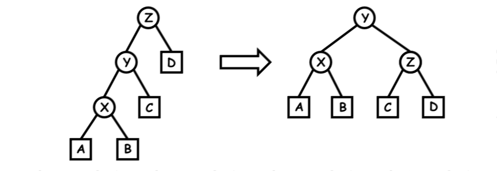
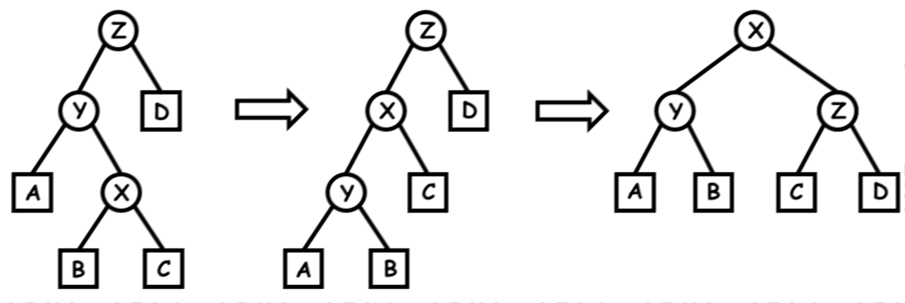
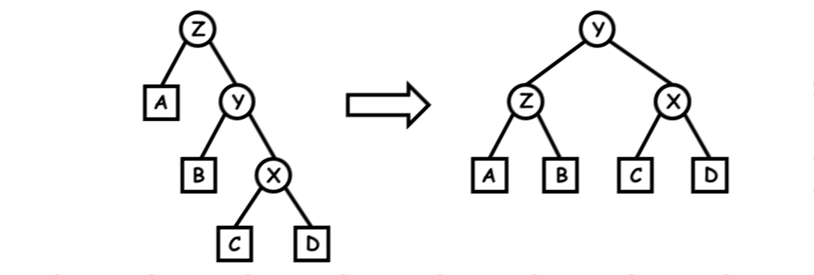
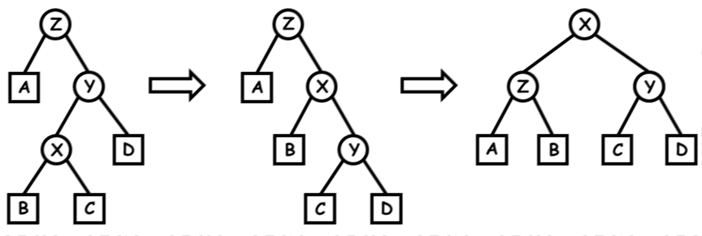

Определение
AVL-дерево — сбалансированное двоичное дерево поиска, в котором поддерживается следующее свойство:
для каждой его вершины высоты её левого и правого поддеревьев различаются не более, чем на 1.
Доказано, что этого свойства достаточно для того, чтобы высота дерева логарифмически зависела от числа его
узлов: высота h AVL-дерева с n ключами лежит в диапазоне от lg(n + 1) до 1.4405*lg(n + 2) - 0.3277.
А так как основные операции над двоичными деревьями поиска (поиск, вставка и удаление узлов) линейно
зависят от его высоты, то получаем гарантированную логарифмическую зависимость времени работы этих
алгоритмов от числа ключей, хранимых в дереве.
AVL-дерево — это прежде всего двоичное дерево поиска, ключи которого удовлетворяют стандартному свойству:
ключ любого узла дерева не меньше любого ключа в левом поддереве данного узла и не больше любого ключа в
правом поддереве этого узла. Это значит, что для поиска нужного ключа в АВЛ-дереве можно использовать
стандартный алгоритм.
AVL-деревья названы по первым буквам фамилий их изобретателей, Г. М. Адельсона-Вельского и Е. М. Ландиса,
которые впервые предложили использовать AVL-деревья в 1962 году.
Повороты в AVL-дереве
Балансировка в AVL-дереве осуществляется с помощью операций вращения. Существует четыре типа поворотов:
- Одиночный правый поворот
- Одиночный левый поворот
- Двойной лево-правый поворот
- Двойной право-левый поворот
Любая операция приводит к нужному результату, а полная высота дерева уменьшается не более, чем на 1, и не
может увеличиться. Каждый поворот сохраняет свойства бинарного дерева поиска и выполняется за константное
время: вычислительная сложность – О(1).
Примечание: на изображениях ниже буквами X, Y, Z обозначены узлы дерева; A, B, C, D – произвольные
поддеревья.

Одиночный правый поворот

Двойной лево-правый поворот

Одиночный левый поворот

Двойной право-левый поворот